Explore Strasbourg
A Brief History
Strasbourg lies at a Rhine crossing that Romans fortified and that medieval emperors made a free imperial city, with its cathedral spire long the tallest structure in Christendom. French and German rule alternated from the seventeenth century to 1945, leaving bilingual streetscapes and institutions such as the university and prefecture. As seat of the Council of Europe and European Parliament, Strasbourg embodies Franco-German reconciliation while timber-framed quarters and canals recall earlier Hanseatic and Alsatian trade.
Attractions Map
Top Sights & Activities
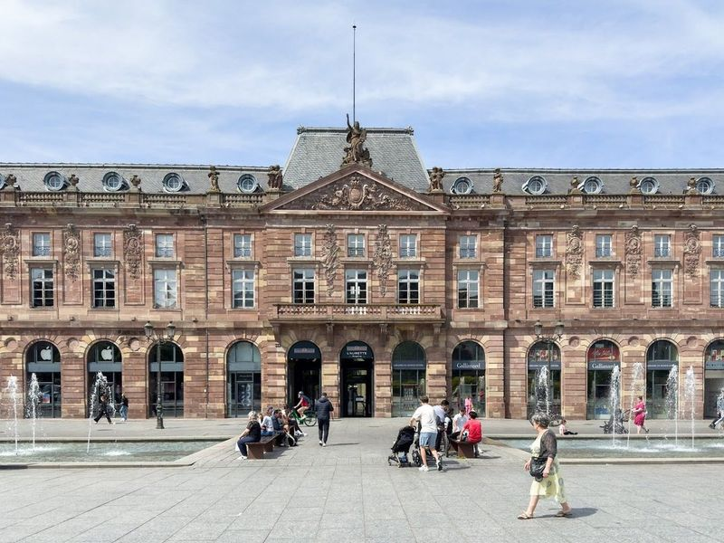
Place Kléber
Place Kléber is Strasbourg's main square, offering a spacious pedestrian area lined with shops and cafes. The square hosts the famous Christkindelsmarik de Strasbourg Christmas market, featuring an impressive fir tree that marks the beginning of the festive season. This market is part of eleven markets spread across central Strasbourg, each with its own specialties but all offering ornaments, gifts, pottery, linens, foods, mulled wine, and the city's symbolic storks.
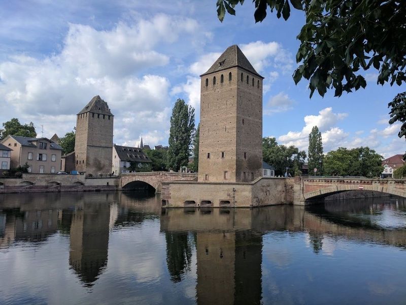
Barrage Vauban
Barrage Vauban, a 17th-century pink sandstone weir and bridge in Strasbourg, was originally constructed as a defensive structure to protect the city from potential attacks. Today, it stands as a historic site housing sculptures and artwork. The panoramic viewpoint at the tip of the dam offers views of the city, including Le Petite France and the Ponts Couverts.
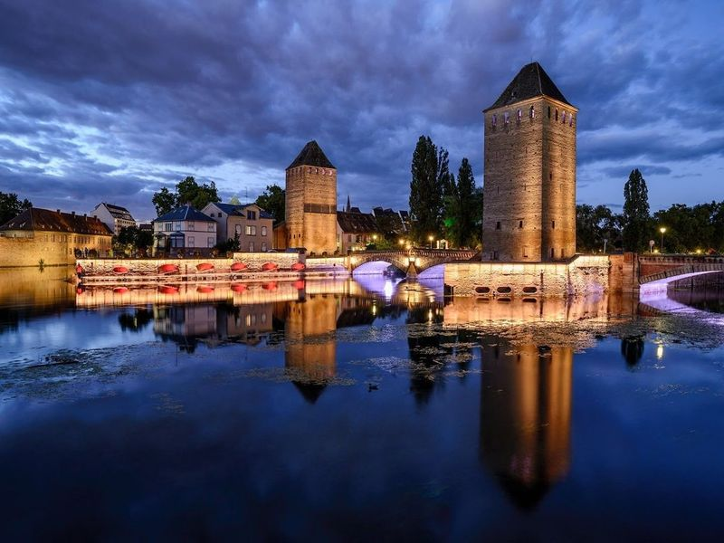
Ponts Couverts de Strasbourg
The Strasbourg Covered Bridges, a set of three bridges and four towers dating back to the 13th century, are located in a setting with scenic views. Despite losing their roofs in the 18th century, they still retain their name. The four towers overlooking the bridges date from the 14th century and were part of the city's former ramparts. These historic structures have been classified as a Monument historique since 1928.
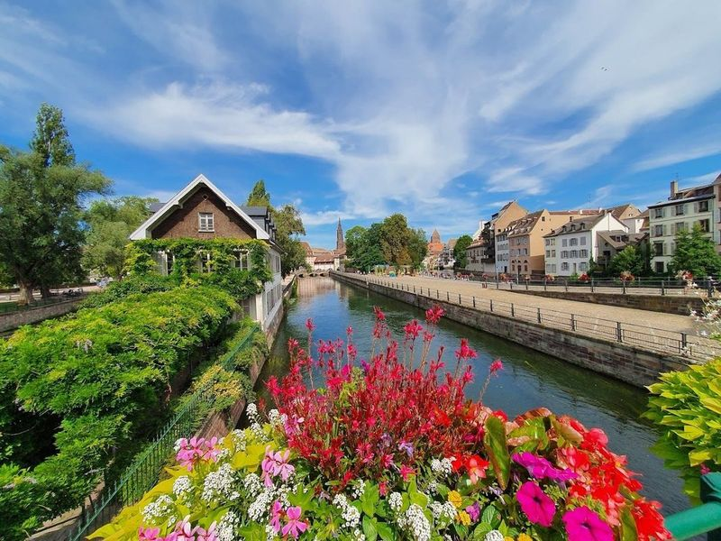
Square Louise-Weiss
Square Louise-Weiss, located in Petite France, Strasbourg, is a picturesque parklike square by a canal and a medieval tower. In December, it transforms into an enchanting Advent Village with thousands of lights creating a magical setting. The village features local farmers and artisans offering regional products like jams, chocolate, and bio wines. The square also hosts stalls selling Alsatian products including liqueurs, apple cider, jam, nougat, mushrooms, honey, and cheese.
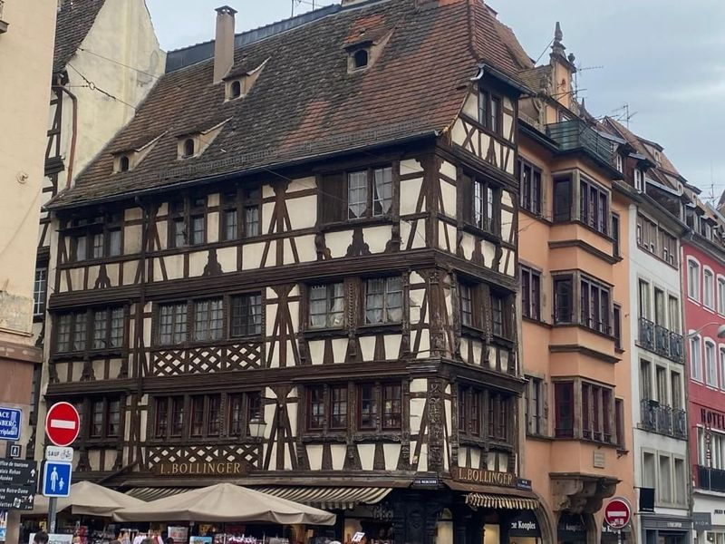
Quartier de La Petite France
La Petite France is a area located just south of the Grande Ile in Strasbourg, between two rivers. It's known for its picturesque streets filled with half-timbered houses, making it a favorite spot for travellers to capture photos. The area is also home to numerous shops, including those within the museums, offering unique souvenirs.
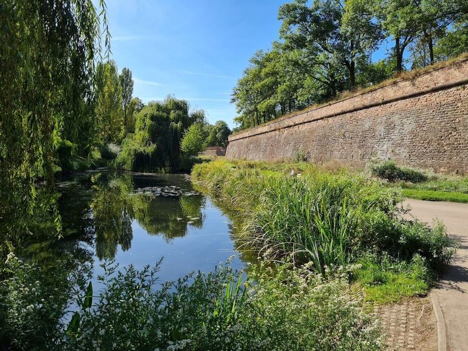
Parc de la Citadelle
Parc de la Citadelle is a sprawling public park situated around an ancient citadel, offering a variety of recreational activities for travellers. Families can enjoy the water playground, sports fields, and walking paths within the park's leafy surroundings. The area also caters to dog owners with designated spaces for their pets to roam freely.
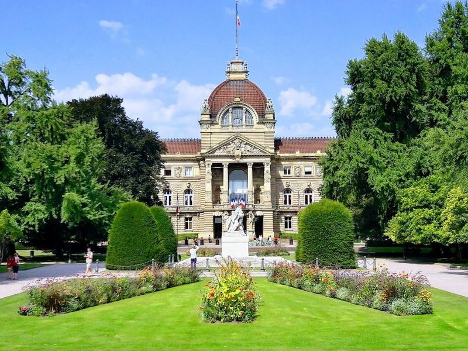
Palais du Rhin
The Palais du Rhin, also known as the Palace of the Rhine, is a Prussian-style Neo-Renaissance palace located in Strasbourg. Built in 1889 by architect Herman Eggert, it was originally intended to be the Imperial Palace for German Emperor Wilhelm II. However, following his death in 1888, construction was completed under his successor.
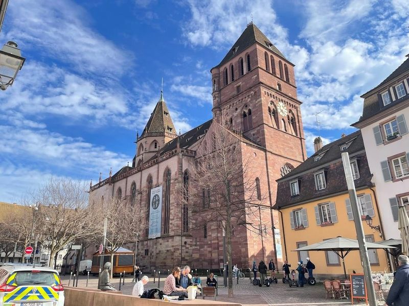
St. Thomas Church
St. Thomas Church, also known as the Protestant Cathedral, is a significant landmark in Strasbourg with a rich historical and cultural legacy. It became the main Protestant church in the region after Cathedrale Notre-Dame transitioned to Catholicism in 1681. The church's late-Gothic design and pink sandstone exterior make it emblematic of Alsatian Gothic architecture. It features tombs and an organ that was played by Mozart.
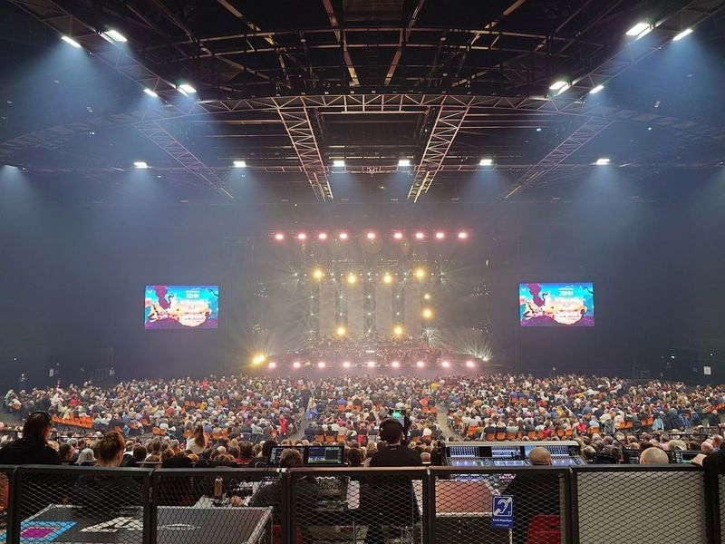
Zénith de Strasbourg
Zénith de Strasbourg is a modern indoor arena located in Eckbolsheim, to the west of Viaropa. Designed by Massimiliano Fuksas, it features an eye-catching orange membrane structure and can accommodate up to 12,000 spectators. The venue hosts major concerts and sports events, attracting travellers from both France and Germany.
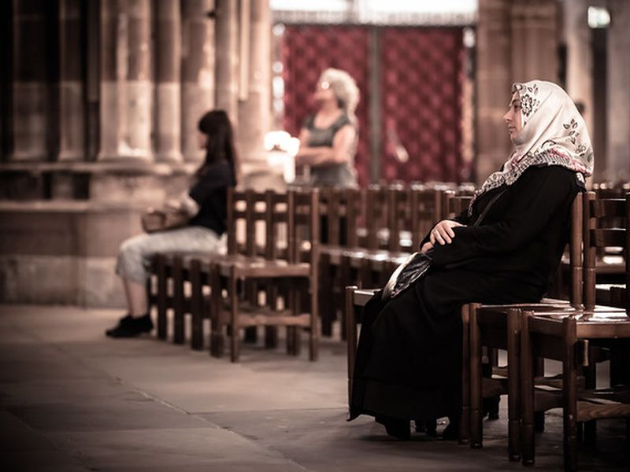
Cathédrale Notre-Dame-de-Strasbourg
A example of Gothic architecture, this cathedral is renowned for its intricate facade and astronomical clock. The site is catalogued as a church. The site is catalogued as a church. The site is catalogued as a church. Cathédrale Notre-Dame-de-Strasbourg is listed among principal sites for Strasbourg within France.
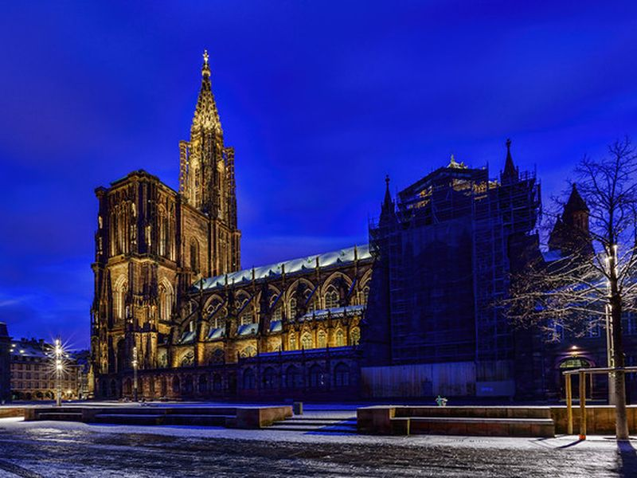
Place du Château
A historic square adjacent to the cathedral, offering views and surrounded by notable buildings. The site is catalogued as a castle. The site is catalogued as a castle. The site is catalogued as a castle. Place du Château is listed among principal sites for Strasbourg within France.
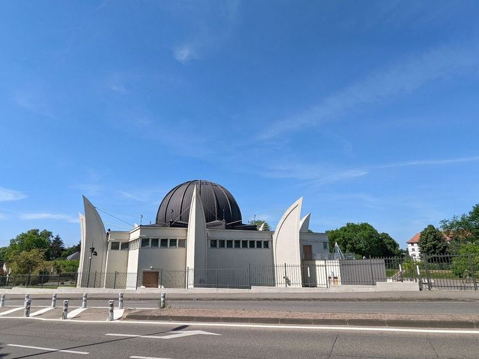
Grande Mosquée de Strasbourg
The Grande Mosquée de Strasbourg is a large, modern mosque that accommodates over 1,000 worshippers. The mosque features elegant architecture and an impressive copper dome. It is situated on a bend in the River Ill and is flanked by gardens. The women's area of prayer is spacious and well-equipped, and the wudhu area is spotless. The mosque has a big parking lot for drivers who come by car.
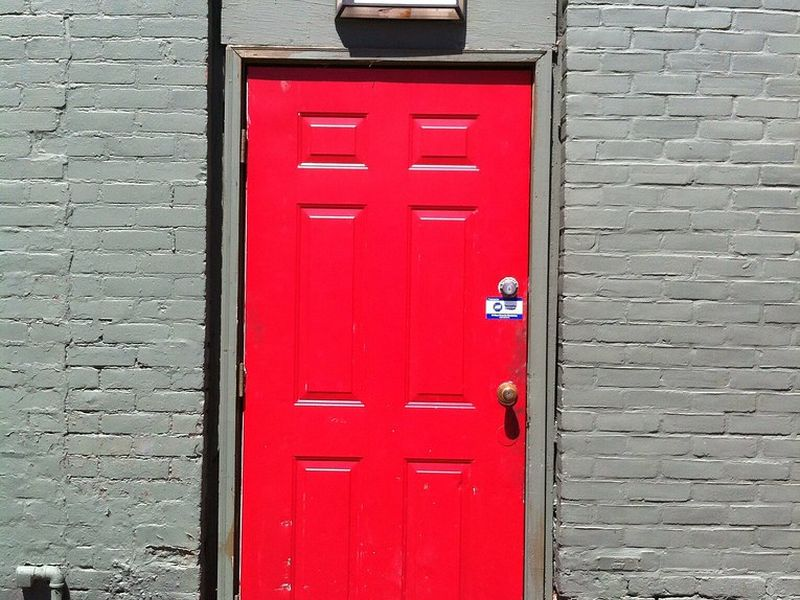
The Little Red Door - Escape Game
The site is catalogued as a tourist attraction. The site is catalogued as a tourist attraction. The site is catalogued as a tourist attraction. The Little Red Door - Escape Game is listed among principal sites for Strasbourg within France. Municipal and regional heritage listings document its place in the historic centre and travellers routes through Strasbourg.
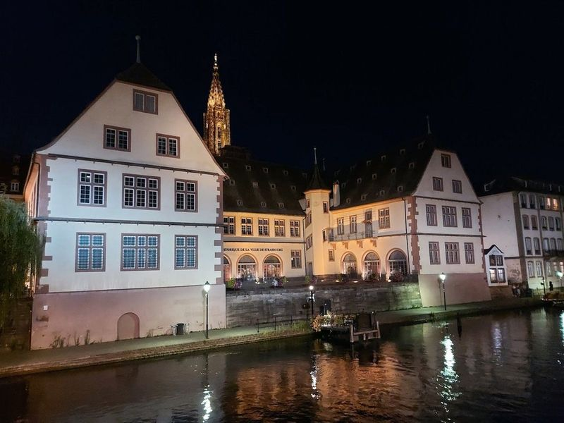
Historical Museum of the City of Strasbourg
The Historical Museum of the City of Strasbourg, housed in the former slaughterhouse since 1920, offers a comprehensive journey through the city's urban, social, and political history. The museum boasts an extensive collection including scale models like the plan-relief of 1727 depicting the city and its surroundings, paintings, military weapons and uniforms, as well as everyday objects.
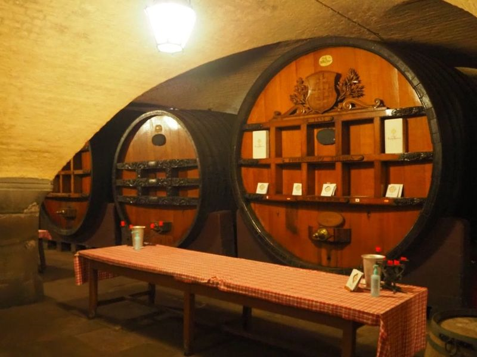
Cave Historique des Hospices de Strasbourg
beneath the Strasbourg Hospital, the Cave Historique des Hospices de Strasbourg is a remarkable landmark that dates back to 1395. This historic cellar offers travellers an enchanting glimpse into the past, showcasing a collection of around 60 majestic oak barrels filled with exquisite Alsatian wines.
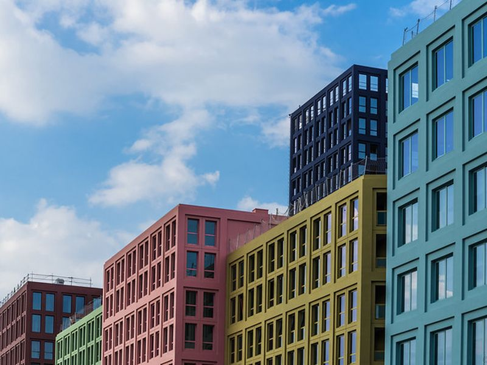
Parc de l'Étoile
The site is catalogued as a tourist attraction. The site is catalogued as a tourist attraction. The site is catalogued as a tourist attraction. Parc de l'Étoile is listed among principal sites for Strasbourg within France. Municipal and regional heritage listings document its place in the historic centre and travellers routes through Strasbourg.
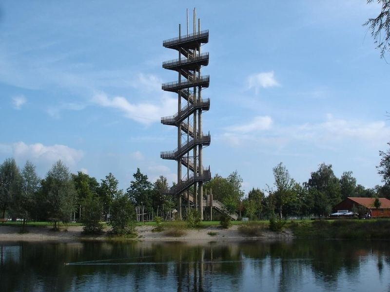
Weißtannenturm
The Weißtannenturm is a well-known observation tower located on the Rhine, offering views of France and the Black Forest. Standing at 44 meters high, it provides an vantage point to observe Strasbourg, the Rhine river, the Vosges, and the Black Forest. The wooden structure is well-maintained and offers a secure and solid experience for travellers.
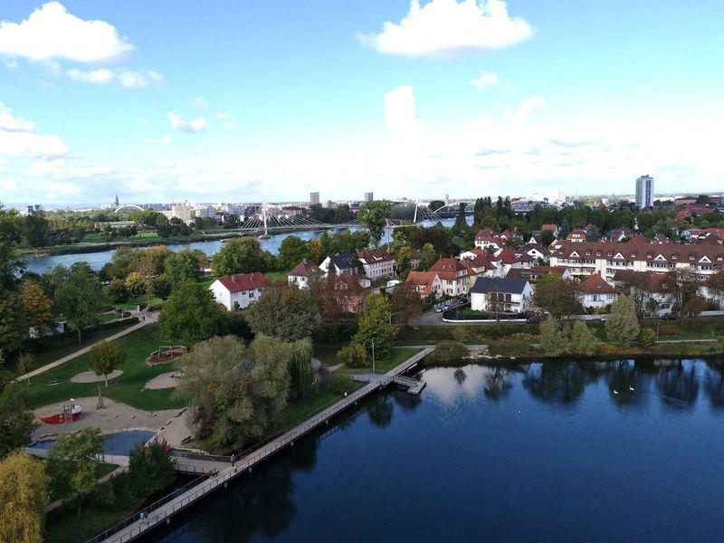
Jardin des Deux Rives
Jardin des Deux Rives, also known as The Two Shores Garden, is a sprawling riverfront park that spans across both the French and German sides of the Rhine. This expansive 370-acre garden is connected by the Bridge of Europe, symbolizing the friendship between France and Germany. travellers can easily walk from Strasbourg, France to Kehl, Germany in just a minute.
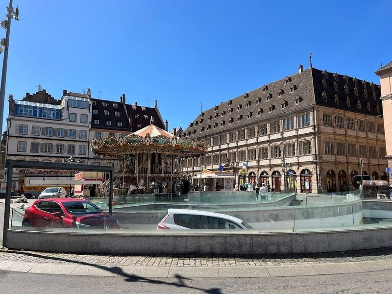
Place Gutenberg
Place Gutenberg, In Strasbourg, holds historical significance as it is named after Johannes Gutenberg, who invented movable type printing while in the city. The square features a statue of Gutenberg and the Renaissance-era Chamber of Commerce building. It also encompasses an ancient Roman road called Rue des Hallebardes. Adjacent to the square is Rue Merciere, lined with old buildings turned into souvenir shops and eateries.
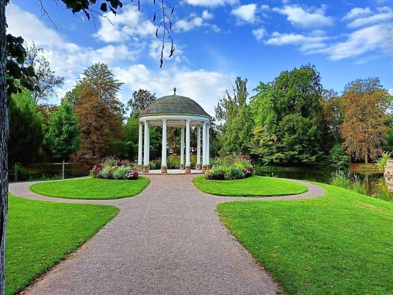
Parc de l'Orangerie
Parc de l'Orangerie is a park located in Strasbourg, dating back to the 17th century. Situated near the European Parliament and the Court of Human Rights, it boasts a rich history that dates back to the French Revolution. Originally home to 140 orange trees confiscated from Chateau de Bouxwiller, only three of these trees remain today and can be seen in the park's greenhouses on certain days.